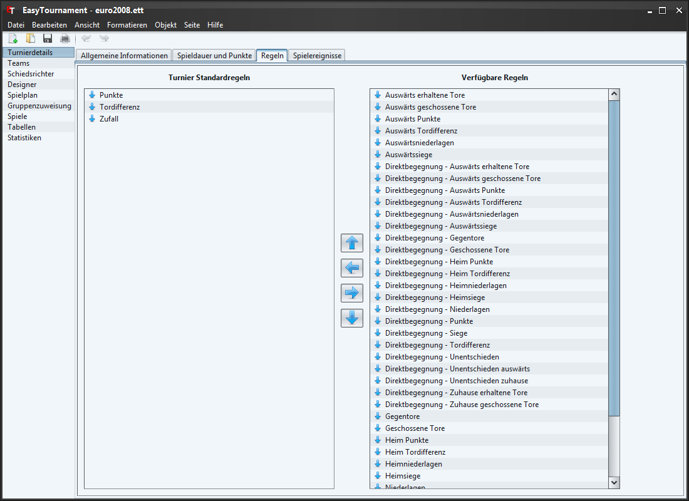

Auf dieser Seite können sie festlegen nach welchen Regeln die Tabellen sortiert werden sollen.
Mit den Pfeilen oder durch verschieben mit der Maus können die verfügbaren Regeln von der rechten Seite zur Linken hinzugefügt und angeordnet werden. Die oberste Regel auf der linken Seite ist diejenige, nach welcher als erstes sortiert wird.
Mit einem Doppelklick oder über das Kontextmenü (rechte Maustaste) kann eingestellt werden, ob die Regel aufsteigend oder absteigend sortiert werden soll (z.B. Punkte: der Pfeil nach unten bedeutet absteigend. Dies heisst, dass das Team mit den meisten Punkten zuoberst in der Tabelle ist.).